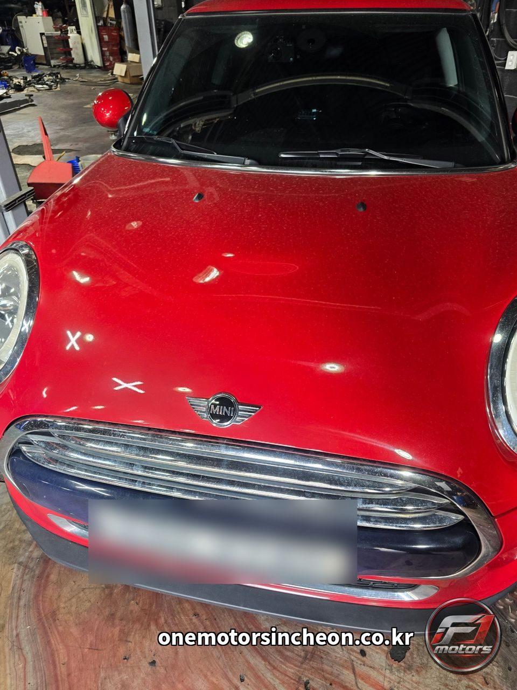
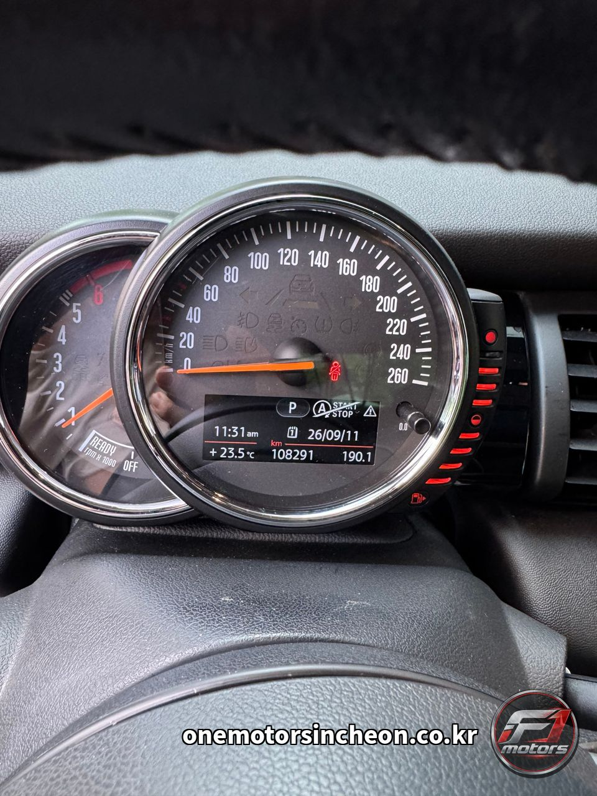
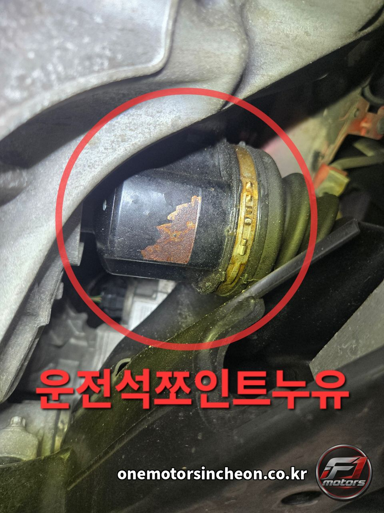
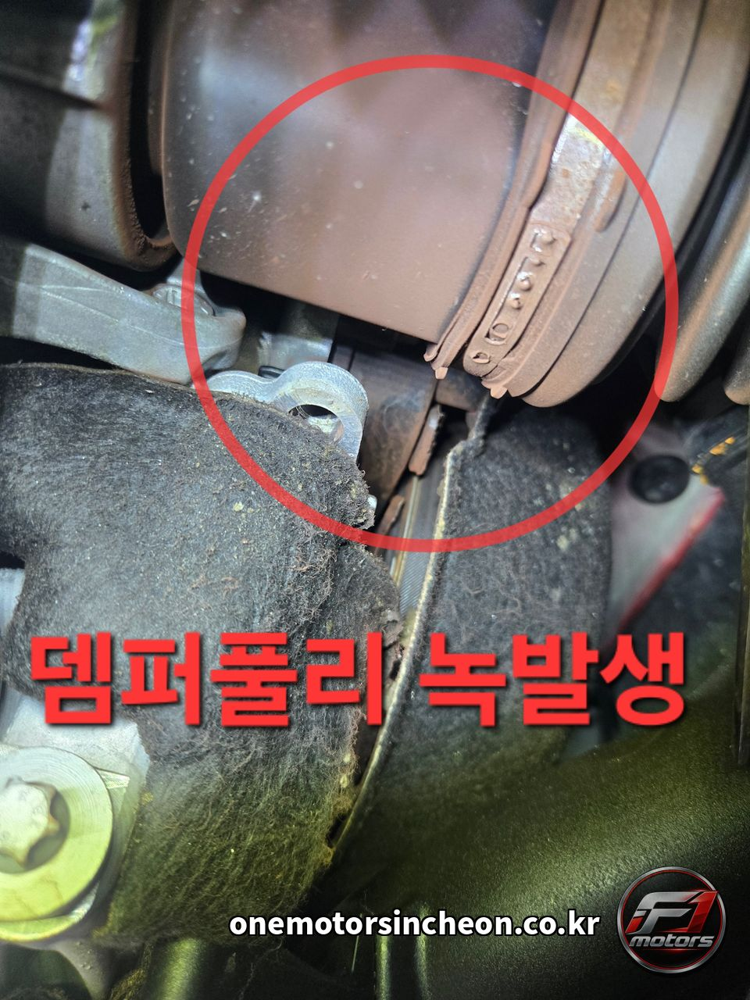
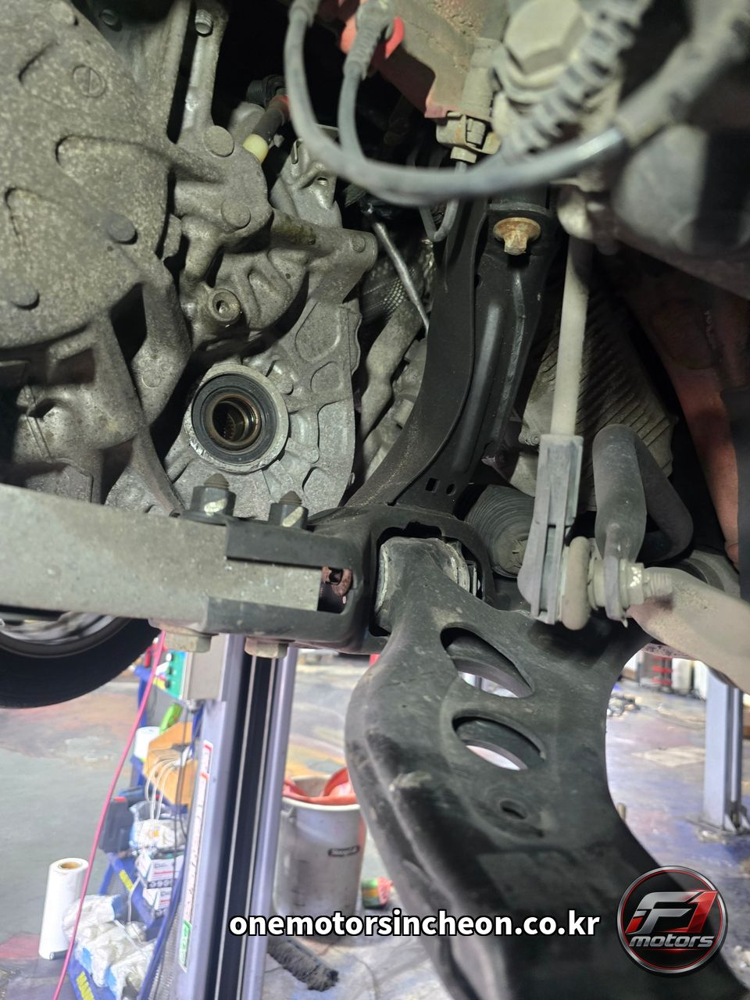
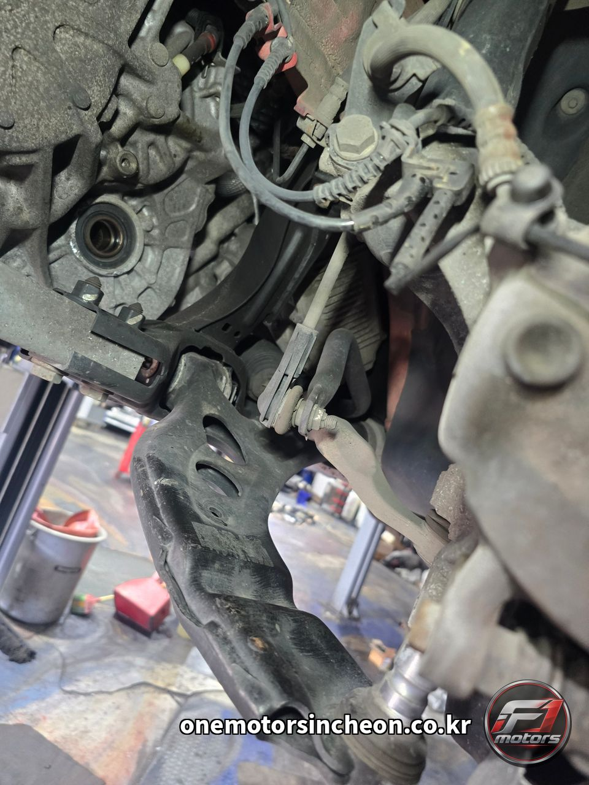
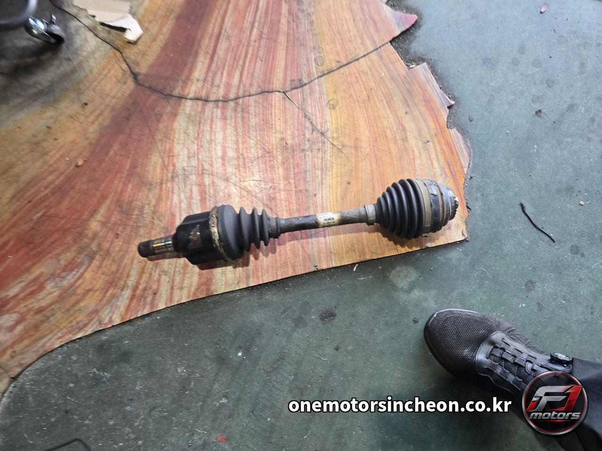
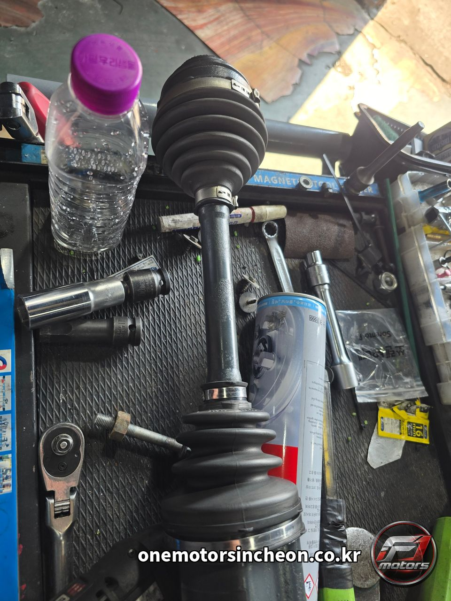
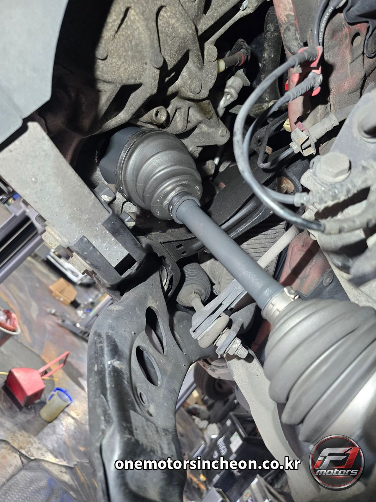

고장사례 및 검색 › 미니 쿠퍼 D
미니 쿠퍼 D 운전석 등속조인트 누유 — 등속조인트 교환
- 차량
- 미니 쿠퍼 D · 108,266 km
- 증상
- 하체 점검 중 운전석 등속조인트에서 그리스가 새어 나온 것을 확인했습니다. 주행거리 10만 8천 km를 넘긴 차량입니다
- 원인
- 등속조인트는 엔진의 힘을 바퀴로 전달하는 부품입니다. 바깥을 감싼 고무 부트 안에 그리스가 들어 있는데, 이 부트가 갈라지거나 밴드가 풀리면 그리스가 밖으로 새어 나옵니다. 그리스가 빠져나간 채로 계속 타면 조인트 안쪽이 마르면서 깎이고, 회전할 때 소리가 나기 시작합니다. 심해지면 주행 중에 동력이 끊기는 상황까지 갈 수 있습니다. 이 차량은 운전석 쪽 조인트에서 누유가 확인돼 드라이브 샤프트를 통째로 교환했습니다. 부트만 갈아서 쓰는 방법도 있지만, 이미 그리스가 빠져나간 뒤라면 안쪽 상태를 장담할 수 없어 조인트째 교환하는 쪽이 확실합니다. 교환 후에는 미션 쪽 오일씰 자리에 제대로 들어갔는지, 새는 곳은 없는지 확인하고 마무리했습니다. 하체를 올린 김에 함께 본 부분도 말씀드립니다. 뎀퍼풀리(크랭크 풀리) 바깥쪽에 녹이 올라와 있었고, 엔진오일 레벨센서 자리에도 누유 흔적이 있었습니다. 두 가지는 이번 작업에 포함하지 않고 점검 소견으로 안내했습니다
- 수리내역
- 리프트 올려 하체 전체 점검 · 운전석 등속조인트 누유 확인 · 드라이브 샤프트 탈거 · 신품 등속조인트 장착 · 체결 토크 확인 및 누유 재점검 · 뎀퍼풀리 녹·엔진오일 레벨센서 누유는 점검 소견으로 안내
- 교환부품
- 운전석 등속조인트(드라이브 샤프트)
정비 사진 9장









이런 증상으로 찾아오십니다
- 미니 등속조인트
- 미니쿠퍼 등속조인트
- 미니 쿠퍼D 등속조인트
- 등속조인트 누유
- 등속조인트 그리스 누유
- 드라이브샤프트 교환
- 운전석 등속조인트 교환
- 등속조인트 교환
- 인천 등속조인트 교환
- 인천 미니 정비
- 인천 미니쿠퍼 정비
- 미니쿠퍼 수리
- 인천 수입차수리전문점
- 수입차수리전문점
- 인천 수입차 정비
- 돌 때 소리나요
- 회전할 때 딱딱 소리
- 핸들 꺾으면 소리
- 하체에서 기름이 묻어나요
- 부트 찢어짐
- 등속조인트 부트 파손
- 뎀퍼풀리 녹
- 크랭크 풀리 녹
- 엔진오일 레벨센서 누유
- 미니 누유
- 인천 제물포구 수입차정비
- 인천에프원모터스
비슷한 증상이 있으시면 전화로 상담해 주세요. 차종과 연식, 증상만 알려주시면 예상 원인을 안내해 드립니다.
인천에프원모터스는 제조사 공식 서비스센터가 아닌 독립 정비업체입니다. 정비 내용은 차량 상태에 따라 달라질 수 있습니다.